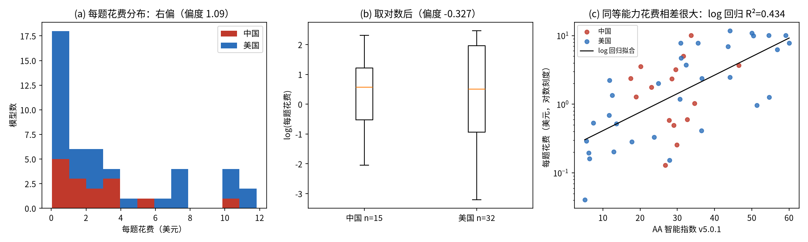
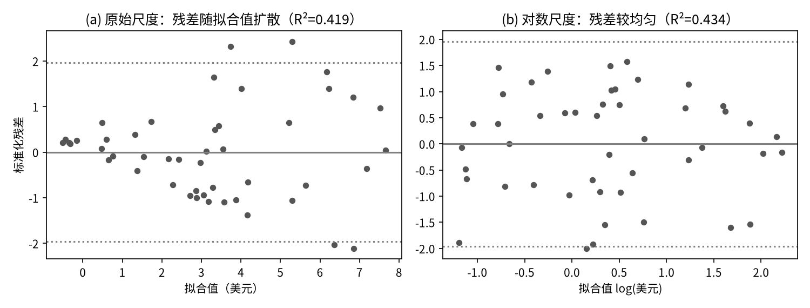
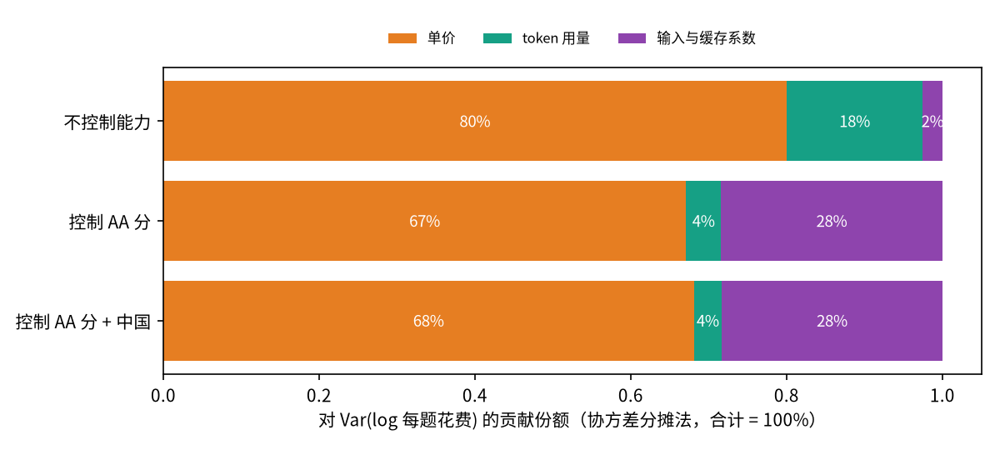
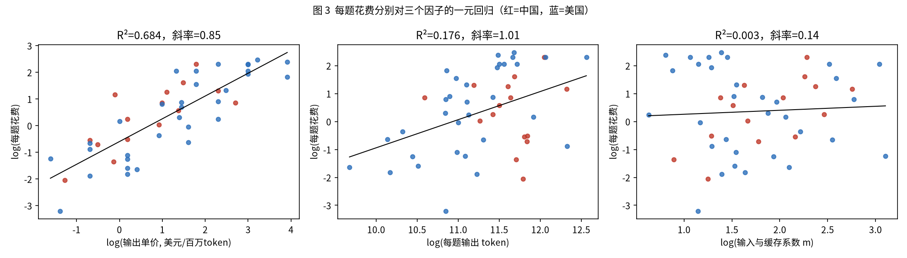
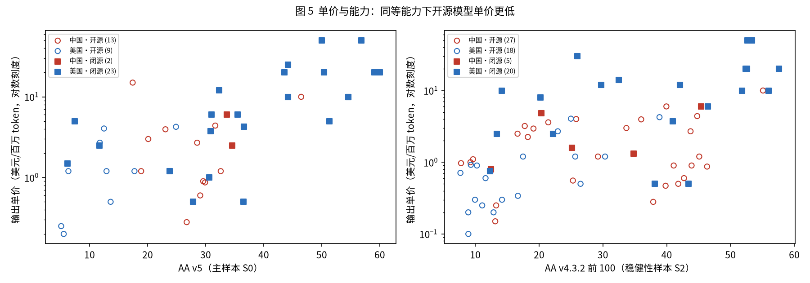
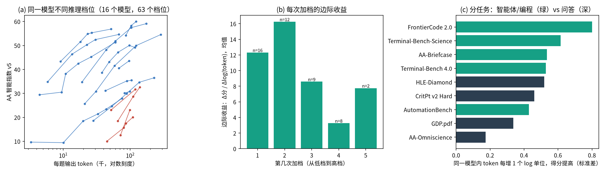
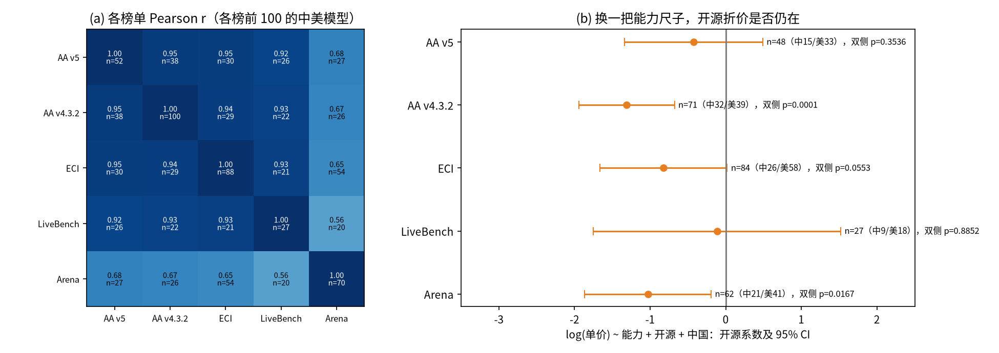

为什么买同样的能力，花的钱能差这么多？
问题。企业采购大模型时真正付的是“完成一道题/一个任务的钱”，而不是每百万 token 的标价。本文用 Artificial Analysis（AA）2026-11-09 的数据，研究中美 47 个模型（中 15 / 美 32）“每题花费”为什么差这么多。
现象（L0）。每题花费从 0.04 到 11.82 美元，相差 292 倍；在 AA 分数 25–35 的同档能力区间里（n=15）也相差 78 倍。能力只解释 ln 花费方差的 43%（r=0.66，p<0.0001）；同等能力下，典型（±2 个残差标准差）区间仍相差约 9.2 倍。
拆解（L1）。按精确恒等式 花费 = 输出单价 × 输出 token × 输入与缓存系数 m 分解：单独看，单价解释 ln 花费的 R²=0.68，token 只解释 0.18。控制能力后，方差贡献为单价 67%、token 4%、m 28%；token 自身方差不小，但它与单价负相关（2Cov=-0.59），“便宜的模型用更多 token”抵消了大部分 token 差异。
单价分支（L2a）。开源模型单价几何均值 1.46 vs 闭源 6.01 美元/百万输出 token（Welch t=-3.95，单侧 p=0.0001），但开源模型能力也更弱。控制能力与国家后，在主样本中开源系数 -0.40（×0.67，单侧 p=0.197，未拒绝 H0）；在更大的 v4.3.2 样本（n=70）中为 -1.29（×0.27，单侧 p<0.0001）。换 5 把能力尺子，开源系数 5/5 为负、3/5 单侧显著。
用量分支（L2b）。16 个模型 63 个推理档位中，全部 16 个模型的“得分对 ln token”斜率为正，平均 11.2 分（token 翻倍约 +7.8 分；单侧 p<0.0001）；边际收益递减（相邻档差值均值 -3.13，t=-2.72，单侧 p=0.010，n=12），末档每多 1 分的边际花费约为首档的 6.5 倍（双侧 p=0.001，n=10）。
中美。控制能力后，中国模型每题花费与美国无显著差异（×1.10，p=0.787），但这是两股力量相抵：单价 ×0.60（p=0.127）、token ×1.68（p=0.0008）。
关键词：每题花费；方差分解；开源折价；推理档位；边际收益递减；能力度量
1 引言与研究问题
大模型的价格表通常按“每百万 token”标价，但企业真正关心的是完成一个任务要花多少钱。完成同一个任务，模型 A 可能单价贵但回答简短，模型 B 单价便宜却要“想”很久、输出大量推理 token。因此“标价便宜”不等于“用起来便宜”。
本文的核心问题是：在能力相近的模型之间，每题花费为什么会相差数十倍？差异主要来自单价，还是来自用量？这个问题对产业有直接意义（选型、预算、推理档位设置），对本课程也是一个合适的案例：它可以用一条恒等式把“花费”拆成几个可分别检验的部分，再用课程中的回归、t 检验、F 检验和 χ² 检验逐层回答。
研究按“现象 → 拆解 → 分支解释 → 稳健性”四层推进（图 0）。每一层的结论会引出下一层的问题。
2 数据与方法
2.1 数据来源与样本
主数据来自 Artificial Analysis（AA）公开模型页（2026-11-09 11:53–12:09 北京时间抓取 639 页）。AA 用同一套 9 项测评（Intelligence Index v5.0.1）给每个模型打分，并记录跑完整套测评时每题的输出 token 数和美元花费，这是本文“每题花费”的来源。能力尺子另取 Epoch ECI、LiveBench 与 LMArena。样本仅限中美两国开发者的模型。按课程要求，不同层的数据集可以不同，但在表 1 中逐一说明。缺失值一律按缺失处理，不填 0。
| 样本 | 用于 | 来源 | 日期 | n | 中 / 美 | 筛选规则 |
|---|---|---|---|---|---|---|
| S0 | L0 / L1 / L2a | Artificial Analysis（AA）模型页，Intelligence Index v5.0.1 + 每题花费/token | 2026-11-09 11:53–12:09 抓取 | 47 | 15 / 32 | 中美全部有 v5 分数且有每题花费、输出单价、输出 token 的模型；每个模型只保留得分最高的推理档位；不做前 100 截断；因缺花费/单价排除 5 个（缺失不当 0）。发布日期 2025-10-15 至 2026-11-05 |
| S2 | L2a 稳健性 | AA Intelligence Index v4.3.2 快照 + 当前单价 | 快照 2026-10-24；单价 2026-11-09 | 70 | 32 / 38 | v4.3.2 前 100 名中美模型（每模型一行）中有正输出单价者；样本更大，用于检验开源折价 |
| S3 | L2b | AA 模型页中同一模型的全部推理档位 | 2026-11-09 | 16 模型 / 63 档位 | 4 / 12（模型数） | 有 v5 分数与每题 token、且至少 2 个档位的模型；保留全部档位 |
| S4 | L3 | 各榜前 100 名中美模型：AA v5、AA v4.3.2、Epoch ECI、LiveBench、LMArena 文本榜 | ECI 2026-11-09；LiveBench 2026-10-25 版；Arena 2026-11-06 版 | 见表 9 对角线 | 见表 10 | 各榜单独取前 100（不足 100 取全部），按 AA 发布名匹配；单价回归需同时有该榜分数与 AA 单价 |
为什么同时控制“国家”和“开源”。两者高度相关：在 AA 全部中美模型版本中（n=428），中国模型开源占 83.4%，美国占 40.7%（χ²=77.58，df=1，p<0.0001，最小期望频数 73.2≥5）。在主样本 S0 中同样显著（表 2）。如果只放其中一个变量，它会“替另一个背锅”，因此所有回归都同时放入两者，并报告 VIF。
| 样本 | 中国 开源 / 闭源 | 美国 开源 / 闭源 | χ²（df=1） | p | 最小期望频数 | Fisher 精确 p 【补充】 |
|---|---|---|---|---|---|---|
| AA 全部版本 | 146 / 29 | 103 / 150 | 77.58 | <0.0001 | 73.2 | — |
| S0（n=47） | 13 / 2 | 9 / 23 | 14.06 | 0.0002 | 7.02 | 0.0003 |
2.2 变量与核心恒等式
原计划用两项恒等式“花费 = 单价 × token”。但 AA 的每题花费包含输入与缓存费用（智能体类测评要反复读入上下文），只用输出单价和输出 token 无法还原花费。因此本文改用精确的三项恒等式（偏离原计划，见 §5）：
$$c_i \;=\; p_i \times \frac{t_i}{10^6} \times m_i,\qquad \ln c_i = \ln p_i + \ln\frac{t_i}{10^6} + \ln m_i$$其中 \(c\)＝每题花费（美元，AA 指数测评的平均每题花费），\(p\)＝输出单价（美元/百万 token），\(t\)＝每题输出 token（含推理 token），\(m=c/(p\,t/10^6)\)＝“输入与缓存系数”，即总花费是“纯输出花费”的倍数。m 由恒等式定义，所以分解是精确的；它与 AA 页面上“总花费/输出花费”的对数相关 r=0.975，说明解释成立。S0 中 m 的中位数为 5.10（范围 1.88–22.28）。
取对数后三项可加，于是有两个直接推论：(1) 方差分解 \(\mathrm{Var}(\ln c)=\sum\mathrm{Var}+2\sum\mathrm{Cov}\)；(2) 用同一组解释变量分别回归三项，三个系数之和恰好等于对 \(\ln c\) 回归的系数（OLS 线性性）。贡献份额用协方差分摊法 【补充】：\(s_k=\mathrm{Cov}(\ln x_k,\ln c)/\mathrm{Var}(\ln c)\)，三项相加为 100%。“控制能力”的版本先把每一项对 AA 分回归、取残差，再做同样的分解。
其他变量：AA＝AA 智能指数 v5（0–100）；开源＝权重公开为 1；中国＝开发者为中国机构为 1；三大厂＝OpenAI/Anthropic/Google 为 1。完整定义见附录 A5。
2.3 方法与课程对应
| 层 | 方法 | 课程 |
|---|---|---|
| L0 | 描述统计、直方图/箱线图、散点图 | 第 1–2 课 |
| L0 | Pearson 相关系数 r 及其 t 检验 | 第 2、6 课 |
| L0 | 简单线性回归、R²、残差图、标准化残差规则 | 第 6 课 |
| L0 | 对数变换（右偏 + 异方差） | 【补充】 |
| L1 | 简单回归 ×3、多元回归、VIF | 第 6–7 课 |
| L1 | 方差分解（协方差分摊法） | 【补充】 |
| L2a | 多元回归 + 虚拟变量（开源/国家/品牌） | 第 7 课 |
| L2a | Welch 两独立样本 t 检验 | 第 3 课 |
| L2a | 两总体方差 F 检验 | 第 4 课 |
| 数据 | 列联表 χ² 独立性检验（Rule of five） | 第 5 课 |
| 数据 | Fisher 精确检验（小样本校验） | 【补充】 |
| L2b | 模型内回归斜率（每个模型单独做简单回归） | 第 6 课（应用于组内） |
| L2b | 单样本 t 检验（检验斜率/差值均值） | 【补充】（t 分布见第 3 课） |
| L3 | 相关矩阵、换尺子重跑多元回归、|标准化残差|>3 离群 | 第 2、6–7 课 |
2.4 假设与检验方向
显著性水平 α=0.05。只有三个方向在本轮计算前写入研究方案，用单侧检验：开源更便宜、多花 token 得分更高、边际收益递减；这三个方向同时报告双侧 p。其余全部双侧。需要说明的是，前几轮探索已经看到过部分相关描述，读者若认为方向并非完全“事前”，可直接按双侧 p 判断，结论不变（见各表）。“未拒绝 H0”不等于“两者相等”。
| 编号 | 层 | H1（备择） | H0 | 检验方向 | 备注 |
|---|---|---|---|---|---|
| H1 | L0 | 每题花费与能力相关：\(\beta_{AA}\neq0\) | \(\beta_{AA}=0\) | 双侧 | — |
| H2 | L1 | 单价、token 各自与花费相关：\(\beta\neq0\) | \(\beta=0\) | 双侧 | 方差分解为描述性，不做检验 |
| H3a | L2a | 控制能力与国家后，开源模型单价更低：\(\beta_{open}<0\) | \(\beta_{open}\ge 0\) | 单侧（预设）＋双侧 | 方向在本轮计算前写入方案 |
| H3b | L2a | 开源 vs 闭源单价均值（Welch t）：\(\mu_{open}<\mu_{closed}\) | \(\mu_{open}\ge\mu_{closed}\) | 单侧（预设）＋双侧 | 未控制能力 |
| H3c | L2a | 闭源与开源的单价方差不同：\(\sigma^2_{c}\neq\sigma^2_{o}\) | \(\sigma^2_{c}=\sigma^2_{o}\) | 双侧 | F 检验 |
| H4a | L2b | 同一模型多花 token 得分更高：平均斜率 \(\bar b>0\) | \(\bar b\le0\) | 单侧（预设）＋双侧 | 单样本 t【补充】 |
| H4b | L2b | 边际收益递减：相邻档位边际收益之差的均值 \(<0\) | \(\ge0\) | 单侧（预设）＋双侧 | 单样本 t【补充】 |
| H4c | L2b | 每多 1 分的边际花费随档位变化（末档 vs 首档） | 无变化 | 双侧 | 非预设方向 |
| H4d | L2b | 中美模型的档位斜率不同 | 相同 | 双侧 | Welch t |
| H5 | L3 | 换能力尺子后，开源系数仍 \(<0\) | \(\ge0\) | 单侧（预设）＋双侧 | 同 H3a |
| H6 | 全文 | 国家虚拟变量系数 \(\neq0\)（所有回归） | \(=0\) | 双侧 | — |
3 结果
3.0 L0 现象：能力相近，花费差很多
问题：每题花费的分布如何？能力能解释多少？
假设：H1（\(\beta_{AA}\ne0\)，双侧）。
检验：描述统计、Pearson r、简单回归、残差图。
| 变量 | n | 均值 | 中位数 | 标准差 | 最小 | Q1 | Q3 | 最大 |
|---|---|---|---|---|---|---|---|---|
| 每题花费：全部 | 47 | 3.224 | 1.769 | 3.553 | 0.040 | 0.505 | 4.844 | 11.821 |
| 每题花费：中国 | 15 | 2.419 | 1.769 | 2.562 | 0.129 | 0.593 | 3.357 | 10.024 |
| 每题花费：美国 | 32 | 3.601 | 1.685 | 3.913 | 0.040 | 0.391 | 7.153 | 11.821 |
| AA v5 分 | 47 | 30.200 | 29.890 | 15.485 | 5.098 | 18.305 | 40.096 | 60.026 |
| 输入与缓存系数 m | 47 | 6.974 | 5.096 | 4.758 | 1.876 | 3.628 | 8.920 | 22.284 |
结果。每题花费明显右偏（偏度 1.09；取对数后 -0.33），最贵与最便宜相差 292 倍。能力与花费正相关：原始尺度 r=0.647，对数尺度 r=0.658（n=47，p 均 <0.0001），拒绝 H0。但 R² 只有 0.434：能力只解释了约四成的花费差异。
同档对比更直观：AA 分 25–35 的 15 个模型中，最便宜的 MiMo-V2.6-Flash（0.129 美元）与最贵的 Qwen3.8 Max (0902)（10.02 美元）相差 78 倍；AA≥50 的 8 个顶尖模型中也相差 11.3 倍。

为什么取对数（残差诊断）。原始尺度回归的残差呈“喇叭口”：|残差| 与拟合值相关 r=0.54（p=0.0001），违反等方差假设；取对数后 r=-0.11（p=0.470），喇叭口消失（图 2）。因此后文统一用 ln 花费 【补充】。对数回归的标准化残差 |>1.96| 占 2.1%（≤5%）、|>2.58| 占 0.0%（≤1%），无 |>3| 离群值，符合第 6 课规则。

| 因变量：每题花费 c | 系数 b | 标准误 | t | 双侧 p | 95% CI | VIF |
|---|---|---|---|---|---|---|
| 截距 | -1.2622 | 0.8828 | -1.43 | 0.160 | [-3.040, 0.516] | |
| AA v5 智能指数 | 0.1486 | 0.0261 | 5.70 | <0.0001 | [0.096, 0.201] | |
| n = 47；R² = 0.419，调整 R² = 0.406；整体 F = 32.47（p <0.0001）；标准化残差 |>1.96| 占比 8.5%，|>2.58| 占比 0.0%，|>3| 个数 0。 | ||||||
| 因变量：ln c | 系数 b | 标准误 | t | 双侧 p | 95% CI | VIF |
|---|---|---|---|---|---|---|
| 截距 | -1.5087 | 0.3582 | -4.21 | 0.0001 | [-2.230, -0.787] | |
| AA v5 智能指数 | 0.0621 | 0.0106 | 5.87 | <0.0001 | [0.041, 0.083] | |
| n = 47；R² = 0.434，调整 R² = 0.421；整体 F = 34.45（p <0.0001）；标准化残差 |>1.96| 占比 2.1%，|>2.58| 占比 0.0%，|>3| 个数 0。 | ||||||
| 因变量：ln c | 系数 b | 标准误 | t | 双侧 p | 95% CI | VIF |
|---|---|---|---|---|---|---|
| 截距 | -1.5452 | 0.3862 | -4.00 | 0.0002 | [-2.324, -0.767] | |
| AA v5 智能指数 | 0.0623 | 0.0107 | 5.81 | <0.0001 | [0.041, 0.084] | 1.00 |
| 中国 (=1) | 0.0956 | 0.3521 | 0.27 | 0.787 | [-0.614, 0.805] | 1.00 |
| n = 47；R² = 0.435，调整 R² = 0.409；整体 F = 16.91（p <0.0001）；标准化残差 |>1.96| 占比 2.1%，|>2.58| 占比 0.0%，|>3| 个数 0。 | ||||||
解读。AA 每高 1 分，每题花费约高 6.4%（10 分约 ×1.86）。但在同等能力下，残差标准差 1.11（对数单位），即 ±2 个标准差覆盖的范围约相差 9.2 倍。加入中国虚拟变量后其系数 0.096（p=0.787），未拒绝“中美同能力花费无差异”。
3.1 L1 拆解：差异主要来自单价，token 被单价“对冲”
问题：ln 花费的差异，多少来自单价、多少来自 token、多少来自输入系数 m？
假设：H2（各项与花费相关，双侧）；方差分解为描述性。
检验：三个简单回归比较 R²；多元回归与 VIF；方差分解 【补充】。
| 解释变量 | n | b | t | 双侧 p | R² |
|---|---|---|---|---|---|
| ln 输出单价 | 47 | 0.854 | 9.86 | <0.0001 | 0.684 |
| ln 每题输出 token | 47 | 1.007 | 3.10 | 0.003 | 0.176 |
| ln 输入与缓存系数 m | 47 | 0.142 | 0.40 | 0.693 | 0.003 |
| 因变量：ln c | 系数 b | 标准误 | t | 双侧 p | 95% CI | VIF |
|---|---|---|---|---|---|---|
| 截距 | -11.6314 | 1.5871 | -7.33 | <0.0001 | [-14.830, -8.433] | |
| ln 输出单价 | 0.8478 | 0.0604 | 14.04 | <0.0001 | [0.726, 0.970] | 1.00 |
| ln 每题输出 token | 0.9770 | 0.1402 | 6.97 | <0.0001 | [0.694, 1.260] | 1.00 |
| n = 47；R² = 0.850，调整 R² = 0.843；整体 F = 124.29（p <0.0001）；标准化残差 |>1.96| 占比 2.1%，|>2.58| 占比 0.0%，|>3| 个数 0。未纳入 m，故 R²<1；残差即 ln m。 | ||||||
| 因变量：ln c | 系数 b | 标准误 | t | 双侧 p | 95% CI | VIF |
|---|---|---|---|---|---|---|
| 截距 | -16.7801 | 2.0108 | -8.35 | <0.0001 | [-20.838, -12.722] | |
| ln 输出单价 | 1.1014 | 0.0841 | 13.10 | <0.0001 | [0.932, 1.271] | 2.52 |
| ln 每题输出 token | 1.5088 | 0.1936 | 7.79 | <0.0001 | [1.118, 1.899] | 2.48 |
| AA v5 智能指数 | -0.0367 | 0.0094 | -3.89 | 0.0004 | [-0.056, -0.018] | 3.82 |
| 中国 (=1) | -0.1145 | 0.1811 | -0.63 | 0.531 | [-0.480, 0.251] | 1.30 |
| n = 47；R² = 0.890，调整 R² = 0.879；整体 F = 84.70（p <0.0001）；标准化残差 |>1.96| 占比 4.3%，|>2.58| 占比 0.0%，|>3| 个数 0。 | ||||||
结果。单价单独解释 68% 的 ln 花费差异，token 只有 18%，m 几乎为 0（p=0.693，未拒绝 H0）。两者一起时 R²=0.85，VIF 均约 1.0，无共线性问题。
| 口径（n=47） | Var(ln c) | Var(ln p) | Var(ln t) | Var(ln m) | 2Cov(p,t) | 2Cov(p,m) | 2Cov(t,m) | 单价贡献 | token 贡献 | m 贡献 |
|---|---|---|---|---|---|---|---|---|---|---|
| 不控制能力 | 2.132 | 1.998 | 0.371 | 0.367 | 0.026 | -0.609 | -0.021 | 80.0% | 17.5% | 2.5% |
| 控制 AA 分 | 1.208 | 1.129 | 0.261 | 0.276 | -0.592 | -0.046 | 0.179 | 67.1% | 4.5% | 28.4% |
| 控制 AA 分 + 中国 | 1.206 | 1.070 | 0.202 | 0.274 | -0.474 | -0.024 | 0.157 | 68.1% | 3.6% | 28.3% |


解读。不控制能力时，单价贡献 80%。控制能力后（即只比较“同等能力”的模型），单价贡献 67%、token 4.5%、m 28%。token 的贡献很小，并不是因为各模型 token 用量相近（其方差占总方差 22%），而是因为同等能力下单价与 token 负相关（2Cov=-0.592，占 -49%）：单价便宜的模型往往输出更多 token，两者相互抵消。表 8b 中 AA 系数为负（-0.0367，p=0.0004），反映高分模型的 m 更低（表 A2）。
中美对比也遵循同样的抵消。对三项分别回归 AA + 中国（表 A2），中国系数：单价 -0.517（×0.60，p=0.127）＋ token 0.516（×1.68，p=0.0008）＋ m 0.096（p=0.571）＝ 总花费 0.096（p=0.787）。即中国模型同能力下 token 显著更多，单价低（但不显著），每题总花费无显著差异。
3.2 L2a 单价分支：开源折价存在，但主样本中不显著
问题：控制能力后，开源、国家、品牌能否解释单价差异？
假设：H3a 开源系数 <0（单侧，预设）；H3b 开源单价均值更低（单侧，预设）；H3c 方差不同（双侧）；国家、品牌双侧。
检验：多元回归 + 虚拟变量；Welch t；F 检验。
| 比较 | 开源 n / 均值 / 标准差 | 闭源 n / 均值 / 标准差 | 差 | t（df） | 单侧 p | 双侧 p |
|---|---|---|---|---|---|---|
| ln 单价（Welch t） | 22 / 0.377 / 1.162 | 25 / 1.793 / 1.293 | -1.415 | -3.95（45.0） | 0.0001 | 0.0003 |
| AA 分（Welch t） | 22 / 21.46 / 10.41 | 25 / 37.89 / 15.27 | -16.43 | -4.35（42.5） | — | <0.0001 |
| ln 单价方差（F，闭源/开源） | F=1.24，df=(24, 21)，s 闭源=1.293，s 开源=1.162 | — | — | — | 0.627 | |
| 因变量：ln p | 系数 b | 标准误 | t | 双侧 p | 95% CI | VIF |
|---|---|---|---|---|---|---|
| 截距 | -0.1778 | 0.5141 | -0.35 | 0.731 | [-1.214, 0.859] | |
| AA v5 智能指数 | 0.0526 | 0.0126 | 4.17 | 0.0001 | [0.027, 0.078] | 1.56 |
| 开源权重 (=1) | -0.3980 | 0.4613 | -0.86 | 0.393 | [-1.328, 0.532] | 2.21 |
| 中国 (=1) | -0.2984 | 0.4181 | -0.71 | 0.479 | [-1.141, 0.545] | 1.59 |
| n = 47；R² = 0.473，调整 R² = 0.437；整体 F = 12.89（p <0.0001）；标准化残差 |>1.96| 占比 4.3%，|>2.58| 占比 2.1%，|>3| 个数 0。 | ||||||
| 因变量：ln p | 系数 b | 标准误 | t | 双侧 p | 95% CI | VIF |
|---|---|---|---|---|---|---|
| 截距 | -0.2197 | 0.5895 | -0.37 | 0.711 | [-1.409, 0.970] | |
| AA v5 智能指数 | 0.0523 | 0.0130 | 4.02 | 0.0002 | [0.026, 0.079] | 1.62 |
| 开源权重 (=1) | -0.3593 | 0.5321 | -0.68 | 0.503 | [-1.433, 0.715] | 2.88 |
| 中国 (=1) | -0.2792 | 0.4415 | -0.63 | 0.530 | [-1.170, 0.612] | 1.73 |
| 三大厂 (=1) | 0.0758 | 0.5015 | 0.15 | 0.881 | [-0.936, 1.088] | 2.43 |
| n = 47；R² = 0.474，调整 R² = 0.424；整体 F = 9.45（p <0.0001）；标准化残差 |>1.96| 占比 4.3%，|>2.58| 占比 2.1%，|>3| 个数 0。 | ||||||
| 因变量：ln p | 系数 b | 标准误 | t | 双侧 p | 95% CI | VIF |
|---|---|---|---|---|---|---|
| 截距 | -0.0936 | 0.4976 | -0.19 | 0.852 | [-1.096, 0.909] | |
| AA v5 智能指数 | 0.0498 | 0.0119 | 4.19 | 0.0001 | [0.026, 0.074] | 1.40 |
| 开源权重 (=1) | -0.5973 | 0.3651 | -1.64 | 0.109 | [-1.333, 0.139] | 1.40 |
| n = 47；R² = 0.467，调整 R² = 0.443；整体 F = 19.29（p <0.0001）；标准化残差 |>1.96| 占比 4.3%，|>2.58| 占比 0.0%，|>3| 个数 0。 | ||||||
| 因变量：ln p | 系数 b | 标准误 | t | 双侧 p | 95% CI | VIF |
|---|---|---|---|---|---|---|
| 截距 | 0.3613 | 0.3948 | 0.92 | 0.363 | [-0.427, 1.150] | |
| AA v5 智能指数 | 0.0393 | 0.0094 | 4.17 | 0.0001 | [0.021, 0.058] | 1.19 |
| 开源权重 (=1) | -1.2923 | 0.3198 | -4.04 | 0.0001 | [-1.931, -0.654] | 1.40 |
| 中国 (=1) | -0.0531 | 0.2893 | -0.18 | 0.855 | [-0.631, 0.524] | 1.24 |
| n = 70；R² = 0.473，调整 R² = 0.449；整体 F = 19.74（p <0.0001）；标准化残差 |>1.96| 占比 2.9%，|>2.58| 占比 1.4%，|>3| 个数 0。 | ||||||

结果。不控制能力时，开源单价几何均值 1.46 美元，闭源 6.01 美元，Welch t=-3.95（n=22+25，单侧 p=0.0001，双侧 p=0.0003），拒绝 H0。但开源模型的平均 AA 分也低 16.4 分（p<0.0001），这部分差价可能只是“能力更弱所以更便宜”。
控制能力与国家后（表 9b，n=47），开源系数 -0.398（×0.67），单侧 p=0.197，双侧 p=0.393，未拒绝 H0；加入品牌（三大厂系数 0.076，p=0.881）不改变结论。原因之一是 S0 中开源与中国高度重合（13/15 个中国模型开源），去掉中国变量后开源系数变为 -0.597（双侧 p=0.109）。在更大的 v4.3.2 样本（n=70，中 32 / 美 38）中，开源系数 -1.292（×0.27），单侧 p<0.0001，双侧 p=0.0001，拒绝 H0；取前 50（n=43）则为 -0.875（双侧 p=0.061）。方差 F 检验未拒绝“开源与闭源单价离散程度相同”（p=0.627）。各模型中国系数均不显著（双侧 p ≥0.48）。
解读。“开源更便宜”在原始比较中非常显著，但其中相当部分来自能力差异；扣除能力后，折价方向一致为负，在 n≈70 的样本中显著，在 n=47 的 v5 样本中不显著。较稳妥的表述是：开源折价存在的证据较强但依赖样本。另外，价格–能力斜率中美不同：美国模型 v5 斜率 0.0620（n=32，p<0.0001），中国 0.0185（n=15，p=0.678），即中国模型的定价与能力关联较弱（描述性，未做交互检验）。
3.3 L2b 用量分支：多花 token 有用，但越往后越贵
问题：同一模型调高推理档位（更多 token），得分提高多少？边际收益是否递减？
假设：H4a 平均斜率 >0（单侧，预设）；H4b 递减（单侧，预设）；H4c 边际花费变化（双侧）；H4d 中美斜率差异（双侧）。
检验：对每个模型单独做“AA 分 ~ ln token”简单回归，得到 16 个斜率，再对斜率做单样本 t 【补充】。这样比较的是同一模型的不同档位，排除了模型之间的差异。
| 检验 | n | 均值 | 标准差 | t（df） | 单侧 p | 双侧 p | 95% CI |
|---|---|---|---|---|---|---|---|
| H4a 斜率（分 / ln token） | 16 | 11.24 | 6.81 | 6.60（15） | <0.0001 | <0.0001 | [7.61, 14.87] |
| H4b 相邻档边际收益之差（模型内均值） | 12 | -3.13 | 3.99 | -2.72（11） | 0.010 | 0.020 | [-5.67, -0.60] |
| H4b′ 末档 − 首档边际收益 | 12 | -6.07 | 8.65 | -2.43（11） | 0.017 | 0.033 | [-11.57, -0.57] |
| H4c ln(末档/首档 每分边际花费) | 10 | 1.87 | 1.23 | 4.78（9） | — | 0.001 | [0.98, 2.75] |
| H4d 斜率：中国 − 美国（Welch） | 4 / 12 | 18.23 vs 8.90 | 10.34 / 3.22 | 1.78（3.2） | — | 0.168 | — |
| 次序 | n | 边际收益均值 | 中位数 | 标准差 | 边际花费 n | 边际花费中位数 | 边际花费均值 |
|---|---|---|---|---|---|---|---|
| 第 1 次加档 | 16 | 12.31 | 11.19 | 8.32 | 13 | 0.141 | 0.366 |
| 第 2 次加档 | 12 | 16.25 | 13.15 | 13.65 | 9 | 0.141 | 0.213 |
| 第 3 次加档 | 9 | 8.58 | 9.89 | 2.82 | 8 | 0.187 | 0.321 |
| 第 4 次加档 | 8 | 3.27 | 3.43 | 3.55 | 7 | 0.236 | 0.821 |
| 第 5 次加档 | 2 | 7.76 | 7.76 | 0.57 | 2 | 0.052 | 0.052 |
| 边际收益使用 Δln token>0.05 的全部 47 个相邻档位对；边际花费只用“花费增加且得分增加 >0.5 分”的 39 对（否则分母接近 0 或为负，比值无意义）。第 5 次加档仅 2 个模型，不作推断。 | |||||||

结果。16/16 个模型的斜率为正，平均每 1 个 ln token 单位 +11.2 分（token 翻倍约 +7.8 分），t=6.60，单侧 p<0.0001，拒绝 H4a 的 H0。边际收益：相邻档位差值均值 -3.13（9/12 个模型为负），单侧 p=0.010、双侧 p=0.020，均拒绝 H0，支持递减；表 10b 显示前两次加档收益最高（12.3、16.3），第 4 次降至 3.3。边际花费：末档每多 1 分的花费约为首档的 6.5 倍（ln 差均值 1.87，双侧 p=0.001，n=10）。中美斜率差异未拒绝 H0（p=0.168，但中国仅 4 个模型，检验力很低）。
任务类型（描述性）。把 9 项测评分别对 ln token 做模型内回归（标准差单位，表 A4），收益最大的是编程与智能体任务（FrontierCode 2.0 0.80 SD），最小的是知识问答（AA-Omniscience 0.17 SD）：记住的知识不会因“多想”而增加，多步操作类任务才吃 token。
3.4 L3 换尺子：结论方向稳定，显著性依赖样本
问题：各能力榜单是否度量同一件事？换尺子后开源系数是否仍为负？
假设：相关 ≠0（双侧）；H5 开源系数 <0（单侧，预设）。
检验：Pearson 相关矩阵；对每把尺子重跑 ln 单价 ~ 能力 + 开源 + 中国；|标准化残差|>3 离群检查。
| AA v5 | AA v4.3.2 | ECI | LiveBench | Arena | |
|---|---|---|---|---|---|
| AA v5 | n=52 | 0.95 n=38，p<0.0001 | 0.95 n=30，p<0.0001 | 0.92 n=26，p<0.0001 | 0.68 n=27，p<0.0001 |
| AA v4.3.2 | 0.95 n=38，p<0.0001 | n=100 | 0.94 n=29，p<0.0001 | 0.93 n=22，p<0.0001 | 0.67 n=26，p=0.0002 |
| ECI | 0.95 n=30，p<0.0001 | 0.94 n=29，p<0.0001 | n=88 | 0.93 n=21，p<0.0001 | 0.65 n=54，p<0.0001 |
| LiveBench | 0.92 n=26，p<0.0001 | 0.93 n=22，p<0.0001 | 0.93 n=21，p<0.0001 | n=27 | 0.56 n=20，p=0.010 |
| Arena | 0.68 n=27，p<0.0001 | 0.67 n=26，p=0.0002 | 0.65 n=54，p<0.0001 | 0.56 n=20，p=0.010 | n=70 |
| 能力尺子 | n | 中 / 美 | 开源数 | 能力系数（p） | 开源系数 | 开源单侧 p | 开源双侧 p | 中国系数（p） | R² | |sr|>3 |
|---|---|---|---|---|---|---|---|---|---|---|
| AA v5 | 48 | 15 / 33 | 23 | 0.0534（0.0001） | -0.426（×0.65） | 0.177 | 0.354 | -0.264（0.522） | 0.493 | 0 |
| AA v4.3.2 | 71 | 32 / 39 | 46 | 0.0395（0.0001） | -1.310（×0.27） | <0.0001 | 0.0001 | -0.033（0.908） | 0.479 | 0 |
| ECI | 84 | 26 / 58 | 26 | 0.0566（0.004） | -0.823（×0.44） | 0.028 | 0.055 | -0.327（0.440） | 0.312 | 0 |
| LiveBench | 27 | 9 / 18 | 12 | 0.0713（0.014） | -0.116（×0.89） | 0.443 | 0.885 | -0.506（0.468） | 0.411 | 0 |
| Arena | 62 | 21 / 41 | 21 | 0.0254（<0.0001） | -1.029（×0.36） | 0.008 | 0.017 | -0.125（0.758） | 0.530 | 0 |
| AA v5 行 n=48，比 S0 多 1 个：此处只要求有单价，不要求有每题 token。完整回归见 data/S4_price_on_*.csv。 | ||||||||||

结果。AA v5、AA v4.3.2、ECI、LiveBench 四把“考试型”尺子两两相关 r=0.92–0.95；人类偏好的 Arena 与它们只有 r=0.56–0.68。换尺子后开源系数 5/5 为负，3/5 单侧 p<0.05（Arena n=62：-1.03，×0.36；ECI n=84：-0.82；AA v4.3.2 n=71：-1.31）；LiveBench（n=27）与 AA v5（n=48）不显著。各回归均无 |标准化残差|>3 的离群点。
用 Arena 作能力时，ln 花费对 Arena 的 R²=0.283（n=26），同一子样本用 AA 为 0.332；LiveBench 为 0.126（n=25，p=0.081）。控制 Arena 后的方差分解：单价 76%、token 6%、m 18%；控制 LiveBench：83% / -3% / 20%。“单价是主因、token 被对冲”在三把尺子下都成立。
L3 的样本只有 20–84 个，且要求同时出现在多个榜单，偏向知名模型；它只能说明结论方向不依赖某一把尺子，不能替代 L0–L2 的主分析。
4 讨论与启示
4.1 对企业选型
(1) 按“每任务花费”而不是标价比较。同等能力下典型区间相差约 9 倍，而 token 用量会抵消一部分单价优势（§3.1），只看百万 token 标价会高估便宜模型的优势。(2) 推理档位要按任务设。前两次加档平均每档 +12–16 分，最后一档每分的边际花费约为首档的 6 倍；编程与智能体任务值得开高档，知识问答类基本不必。(3) 输入与缓存系数 m 不可忽视：中位数约 5，即大部分花费来自读入上下文，长上下文智能体场景应关注缓存定价。
4.2 对模型厂商
低单价策略若伴随更多 token，用户感知到的每任务花费未必更低（中国模型即为一例）。开源折价在较大样本中约为 ×0.27–×0.36，但在最新的 v5 样本中不显著，说明“开源=便宜”需要按能力匹配后再比较。
4.3 中美差异：放在前几轮发现的背景下理解
本文发现中国模型同能力下 token 多 ×1.68、单价约 ×0.60，每题总花费无显著差异。这与前几轮探索的结论一致：中国模型的额外 token 主要出现在智能体类测评（Terminal-Bench、Briefcase 等约 1.7–2.1 倍）；并且在 v5 新考卷上，中国模型相对 v4.3.2 的折算分系统性偏低（约 −6.5 分），主要集中在科学与通用知识类测评。因此“中国模型性价比”的结论对能力尺子敏感：用 v5 衡量时中国模型能力被评得更低，单价折扣与 token 增量相抵后“性价比”与美国相当。这些背景结论来自前序分析，本文未重新检验。
5 局限
- 偏离原计划：两项恒等式改为三项。AA 花费含输入/缓存费用，只用“单价 × token”无法还原花费，故引入 m。m 由恒等式定义，混合了输入单价、上下文长度、缓存命中等因素，本文未进一步拆解。
- 单一来源。花费与 token 全部来自 AA 的测评运行，反映的是其测评任务（偏智能体、长上下文）的负载，不等于企业真实负载；单价为公开标价，不含折扣与批量价。
- 样本小、观察性数据。S0 仅 47 个模型，中国 15 个；L2b 中国只有 4 个模型有多档位，中美斜率比较检验力很低。所有结论是相关而非因果。
- 开源与国家高度相关（表 2），VIF 约 2.2，尚可接受，但两者的效应难以完全分开。
- 检验方向。三个单侧方向在本轮计算前写入方案，但前几轮已看到部分描述；因此全部同时报告双侧 p。本文做了多个检验，未做多重比较校正（如 Bonferroni 【补充】），边缘显著的结果（如 ECI 开源系数双侧 p=0.055）应谨慎解读。
- 方法超出课程范围之处已标注【补充】：对数变换、方差分解、单样本 t、Fisher 精确检验、模型内斜率。
- 快照数据。价格与分数均为 2026-11-09 前后的快照，已下架模型没有价格，无法研究价格随时间的变化。
6 结论
- 能力相近的中美模型，每题花费仍相差一个数量级：能力只解释约 43% 的 ln 花费差异（n=47）。
- 差异主要来自单价（同能力下贡献 67%）；token 用量差异大，但与单价负相关而被大部分抵消（贡献 4%）；输入与缓存系数贡献 28%。
- 开源折价方向稳定（5/5 把尺子为负），在较大样本中显著（v4.3.2 n=70，×0.27），在 v5 主样本中未拒绝 H0。
- 多花 token 能提分（16/16 个模型斜率为正），但边际收益递减（单侧 p=0.010），末档边际花费约为首档的 6.5 倍。
- 中国模型同能力下“单价低、token 多”，二者相抵，每题花费与美国无显著差异（p=0.787）。
附录
A1 S0 样本明细（n=47，按 AA 分降序）
展开 47 行
| 模型（最高分档位） | 国家 | 开源 | AA v5 | 输出单价 $/M | 每题输出 token（千） | m | 每题花费 $ |
|---|---|---|---|---|---|---|---|
| Gemini 4 Carbon (High) | 美 | 否 | 60.0 | 20 | 122.8 | 3.16 | 7.756 |
| Claude Opus 5.5 (Max, Default Fallback) | 美 | 否 | 59.1 | 20 | 173.3 | 2.90 | 10.036 |
| GPT-6 Astra (Max) | 美 | 否 | 56.9 | 50 | 52.0 | 2.40 | 6.245 |
| GPT-6.1 Sol (Max) | 美 | 否 | 54.6 | 10 | 67.8 | 1.88 | 1.272 |
| Claude Sonnet 5.5 (Max, Default Fallback) | 美 | 否 | 54.5 | 10 | 285.4 | 3.51 | 10.021 |
| GPT-6.1 Terra (Max) | 美 | 否 | 51.3 | 5 | 59.9 | 3.21 | 0.961 |
| Gemini 4 Argon (High) | 美 | 否 | 50.4 | 20 | 116.4 | 4.27 | 9.947 |
| Claude Fable 5.1 (Xhigh, Default Fallback) | 美 | 否 | 50.0 | 50 | 97.1 | 2.24 | 10.847 |
| Kimi K3.1 Pro | 中 | 是 | 46.5 | 10 | 72.2 | 5.10 | 3.681 |
| Claude Opus 5 (Max) | 美 | 否 | 44.2 | 25 | 118.1 | 4.00 | 11.821 |
| GPT-6 Sol (Max) | 美 | 否 | 44.2 | 10 | 53.9 | 4.58 | 2.466 |
| Muse Wonder (Max) | 美 | 否 | 43.6 | 20 | 96.1 | 3.62 | 6.952 |
| Muse Spark 1.3 (Max) | 美 | 否 | 36.6 | 4.25 | 91.1 | 6.16 | 2.386 |
| Claude Haiku 5.5 (Max) | 美 | 否 | 36.5 | 0.5 | 226.0 | 3.64 | 0.411 |
| Grok 4.7 (Xhigh) | 美 | 否 | 35.5 | 6 | 104.5 | 12.39 | 7.772 |
| Tencent Hy4 | 中 | 否 | 34.6 | 2.501 | 78.1 | 5.28 | 1.031 |
| Qwen3.8 Max (0902) | 中 | 否 | 33.7 | 6 | 170.8 | 9.78 | 10.024 |
| DeepSeek V4.1 Flash 1017 (Max) | 中 | 是 | 32.6 | 1.2 | 139.0 | 3.61 | 0.602 |
| GPT-5.6 Terra (Max) | 美 | 否 | 32.3 | 12 | 66.2 | 4.70 | 3.735 |
| GLM-5.3 (Max) | 中 | 是 | 31.7 | 4.4 | 119.0 | 9.57 | 5.009 |
| Grok 4.6 (Xhigh) | 美 | 否 | 31.0 | 6 | 58.4 | 13.35 | 4.679 |
| Gemini 3.8 Flash (High) | 美 | 否 | 30.8 | 3.75 | 98.9 | 20.93 | 7.766 |
| Inkling 2 Small | 美 | 否 | 30.6 | 1 | 149.8 | 7.87 | 1.178 |
| MiMo-V2.6-Pro | 中 | 是 | 29.9 | 0.87 | 121.1 | 2.44 | 0.257 |
| Ling 3.1 Flash 1019 | 中 | 是 | 29.6 | 0.9 | 224.7 | 15.75 | 3.185 |
| MiniMax-M3.1-Flash | 中 | 是 | 29.1 | 0.6 | 138.2 | 5.92 | 0.491 |
| Step 5 Preview | 中 | 是 | 28.5 | 2.7 | 113.5 | 7.65 | 2.345 |
| GPT-6 Luna (Max) | 美 | 否 | 27.9 | 0.5 | 75.3 | 4.04 | 0.152 |
| GLM-5.3-Flash | 中 | 是 | 27.8 | 0.5 | 134.2 | 8.69 | 0.583 |
| MiMo-V2.6-Flash | 中 | 是 | 26.7 | 0.28 | 131.8 | 3.48 | 0.129 |
| Muse Spark Open (Xhigh) | 美 | 是 | 24.9 | 4.25 | 66.4 | 7.15 | 2.018 |
| GPT-5.6 Luna (Max) | 美 | 否 | 23.8 | 1.2 | 59.0 | 4.68 | 0.331 |
| DeepSeek V4 Pro 0813 (Max) | 中 | 是 | 23.1 | 3.96 | 98.7 | 4.52 | 1.769 |
| Qwen3.8 27B (Xhigh) | 中 | 是 | 20.1 | 3 | 109.8 | 10.71 | 3.530 |
| MiniMax-M3 | 中 | 是 | 18.9 | 1.2 | 91.5 | 11.71 | 1.285 |
| Beam 1.0 | 美 | 是 | 17.7 | 1.2 | 34.2 | 6.92 | 0.284 |
| Kimi K3 (Low) | 中 | 是 | 17.4 | 15 | 39.7 | 3.98 | 2.369 |
| Nemotron 3.5 Super VL | 美 | 是 | 13.6 | 0.5 | 81.4 | 12.76 | 0.520 |
| Inkling Small | 美 | 是 | 12.9 | 1.2 | 36.7 | 4.61 | 0.203 |
| Inkling (Xhigh) | 美 | 是 | 12.5 | 4.05 | 51.3 | 6.51 | 1.352 |
| Nemotron 3 Ultra 550B A55B (Reasoning) | 美 | 是 | 11.8 | 2.7 | 51.5 | 16.02 | 2.226 |
| Gemini 3.5 Flash-Lite | 美 | 否 | 11.7 | 2.5 | 30.3 | 9.15 | 0.693 |
| Claude 4.5 Haiku (Reasoning) | 美 | 否 | 7.4 | 5 | 25.3 | 4.21 | 0.532 |
| Muse Glimmer (High) | 美 | 是 | 6.3 | 1.2 | 26.1 | 5.15 | 0.161 |
| Gemini 3.1 Flash-Lite | 美 | 否 | 6.2 | 1.5 | 15.9 | 8.15 | 0.194 |
| Nemotron 3.5 Lightning | 美 | 是 | 5.5 | 0.2 | 65.0 | 22.28 | 0.290 |
| Granite 4.2 8B | 美 | 是 | 5.1 | 0.25 | 51.5 | 3.14 | 0.040 |
A2 三项分别回归（OLS 可加性检查）
同一组解释变量下，ln p、ln(t/10⁶)、ln m 三个回归的系数之和等于 ln c 回归的系数。
| 因变量：ln c | 系数 b | 标准误 | t | 双侧 p | 95% CI | VIF |
|---|---|---|---|---|---|---|
| 截距 | -1.5452 | 0.3862 | -4.00 | 0.0002 | [-2.324, -0.767] | |
| AA v5 智能指数 | 0.0623 | 0.0107 | 5.81 | <0.0001 | [0.041, 0.084] | 1.00 |
| 中国 (=1) | 0.0956 | 0.3521 | 0.27 | 0.787 | [-0.614, 0.805] | 1.00 |
| n = 47；R² = 0.435，调整 R² = 0.409；整体 F = 16.91（p <0.0001）；标准化残差 |>1.96| 占比 2.1%，|>2.58| 占比 0.0%，|>3| 个数 0。 | ||||||
| 因变量：ln p | 系数 b | 标准误 | t | 双侧 p | 95% CI | VIF |
|---|---|---|---|---|---|---|
| 截距 | -0.4901 | 0.3639 | -1.35 | 0.185 | [-1.224, 0.243] | |
| AA v5 智能指数 | 0.0591 | 0.0101 | 5.86 | <0.0001 | [0.039, 0.080] | 1.00 |
| 中国 (=1) | -0.5167 | 0.3318 | -1.56 | 0.127 | [-1.185, 0.152] | 1.00 |
| n = 47；R² = 0.464，调整 R² = 0.440；整体 F = 19.07（p <0.0001）；标准化残差 |>1.96| 占比 4.3%，|>2.58| 占比 2.1%，|>3| 个数 0。 | ||||||
| 因变量：ln(t/10⁶) | 系数 b | 标准误 | t | 双侧 p | 95% CI | VIF |
|---|---|---|---|---|---|---|
| 截距 | -3.3600 | 0.1581 | -21.26 | <0.0001 | [-3.679, -3.042] | |
| AA v5 智能指数 | 0.0225 | 0.0044 | 5.13 | <0.0001 | [0.014, 0.031] | 1.00 |
| 中国 (=1) | 0.5165 | 0.1441 | 3.58 | 0.0008 | [0.226, 0.807] | 1.00 |
| n = 47；R² = 0.455，调整 R² = 0.431；整体 F = 18.39（p <0.0001）；标准化残差 |>1.96| 占比 8.5%，|>2.58| 占比 0.0%，|>3| 个数 0。 | ||||||
| 因变量：ln m | 系数 b | 标准误 | t | 双侧 p | 95% CI | VIF |
|---|---|---|---|---|---|---|
| 截距 | 2.3050 | 0.1841 | 12.52 | <0.0001 | [1.934, 2.676] | |
| AA v5 智能指数 | -0.0193 | 0.0051 | -3.78 | 0.0005 | [-0.030, -0.009] | 1.00 |
| 中国 (=1) | 0.0958 | 0.1679 | 0.57 | 0.571 | [-0.242, 0.434] | 1.00 |
| n = 47；R² = 0.254，调整 R² = 0.220；整体 F = 7.49（p = 0.002）；标准化残差 |>1.96| 占比 4.3%，|>2.58| 占比 0.0%，|>3| 个数 0。 | ||||||
| 因变量：ln(t/10⁶) | 系数 b | 标准误 | t | 双侧 p | 95% CI | VIF |
|---|---|---|---|---|---|---|
| 截距 | -3.4700 | 0.2239 | -15.50 | <0.0001 | [-3.922, -3.018] | |
| AA v5 智能指数 | 0.0248 | 0.0055 | 4.51 | <0.0001 | [0.014, 0.036] | 1.56 |
| 开源权重 (=1) | 0.1401 | 0.2009 | 0.70 | 0.489 | [-0.265, 0.545] | 2.21 |
| 中国 (=1) | 0.4396 | 0.1821 | 2.41 | 0.020 | [0.072, 0.807] | 1.59 |
| n = 47；R² = 0.461，调整 R² = 0.424；整体 F = 12.28（p <0.0001）；标准化残差 |>1.96| 占比 8.5%，|>2.58| 占比 0.0%，|>3| 个数 0。 | ||||||
A3 L2b 各模型斜率（S3）
| 模型 | 国家 | 档位数 | AA 分 最低→最高 | token 最高/最低 | 斜率（分/ln token） |
|---|---|---|---|---|---|
| DeepSeek V4 Pro 0813 (Max) | 中 | 2 | 12.6 → 23.1 | ×1.38 | 32.65 |
| DeepSeek V4.1 Flash 1017 (Max) | 中 | 3 | 18.5 → 32.6 | ×2.13 | 18.77 |
| Gemini 4 Carbon (High) | 美 | 3 | 54.2 → 60.0 | ×1.42 | 16.42 |
| Claude Sonnet 5.5 (Max, Default Fallback) | 美 | 5 | 25.6 → 54.5 | ×13.68 | 11.41 |
| Claude Opus 5.5 (Max, Default Fallback) | 美 | 5 | 34.8 → 59.1 | ×9.09 | 11.21 |
| Qwen3.8 27B (Xhigh) | 中 | 4 | 10.0 → 20.1 | ×2.45 | 11.18 |
| GLM-5.3 (Max) | 中 | 2 | 23.1 → 31.7 | ×2.29 | 10.32 |
| Claude Fable 5.1 (Max, Default Fallback) | 美 | 5 | 38.7 → 50.0 | ×3.12 | 9.42 |
| GPT-6.1 Terra (Max) | 美 | 6 | 29.4 → 51.3 | ×13.54 | 9.09 |
| Claude Haiku 5.5 (Max) | 美 | 5 | 18.6 → 36.5 | ×8.02 | 8.99 |
| Muse Wonder (Max) | 美 | 2 | 40.5 → 43.6 | ×1.41 | 8.80 |
| GPT-6.1 Sol (Max) | 美 | 5 | 34.8 → 54.6 | ×11.62 | 8.12 |
| GPT-6 Astra (Max) | 美 | 5 | 43.3 → 56.9 | ×5.70 | 7.95 |
| GPT-6 Luna (Max) | 美 | 6 | 9.4 → 27.9 | ×22.85 | 6.29 |
| Grok 4.7 (Xhigh) | 美 | 3 | 31.1 → 35.5 | ×2.45 | 5.07 |
| Gemini 3.8 Flash (High) | 美 | 2 | 30.1 → 30.8 | ×1.21 | 4.11 |
A4 分测评的模型内 token 斜率（63 个档位，模型内去均值 【补充】）
| 测评 | 类别 | n | 斜率（标准差/ln token） | 双侧 p |
|---|---|---|---|---|
| FrontierCode 2.0 | 编程 | 63 | 0.801 | <0.0001 |
| Terminal-Bench-Science | 科学·智能体 | 63 | 0.615 | <0.0001 |
| AA-Briefcase | 知识工作·智能体 | 63 | 0.534 | <0.0001 |
| Terminal-Bench 4.0 | 编程·智能体 | 63 | 0.529 | <0.0001 |
| HLE-Diamond | 通用·问答 | 63 | 0.519 | <0.0001 |
| CritPt v2 Hard | 科学·问答 | 63 | 0.461 | <0.0001 |
| AutomationBench | 知识工作·智能体 | 63 | 0.429 | <0.0001 |
| GDP.pdf | 知识工作·问答 | 63 | 0.337 | <0.0001 |
| AA-Omniscience | 通用·知识问答 | 63 | 0.174 | 0.0002 |
A5 变量定义
| 变量 | 定义 | 来源字段 |
|---|---|---|
| c 每题花费 | AA 跑完 Intelligence Index 全部测评的平均每题美元花费（含输入、缓存、输出） | AA 页面 intelligenceIndexCostPerTask.total |
| p 输出单价 | 美元 / 百万输出 token（首发厂商标价） | AA price_out |
| t 每题输出 token | 每题平均输出 token，含推理 token | AA intelligenceIndexTokensPerTask.output |
| m 输入与缓存系数 | c / (p·t/10⁶)，由恒等式定义 | 计算得到 |
| AA | Intelligence Index v5.0.1，9 项测评加权（知识工作、编程、科学、通用各 25%） | AA aa_ii_v5 |
| 开源 / 中国 / 三大厂 | 虚拟变量：权重公开 / 开发者为中国机构 / OpenAI·Anthropic·Google | AA 页面 + 人工核对 |
| ECI / LiveBench / Arena | Epoch Capabilities Index；LiveBench 2026-10-25 版 overall；LMArena 文本榜分数 | 各官网 |
A6 稳健性汇总：开源系数
| 设定 | n | 开源系数 | 倍数 | 单侧 p | 双侧 p |
|---|---|---|---|---|---|
| S0：AA + 开源 + 中国 | 47 | -0.398 | ×0.67 | 0.197 | 0.393 |
| S0：+ 三大厂 | 47 | -0.359 | ×0.70 | 0.252 | 0.503 |
| S0：去掉中国 | 47 | -0.597 | ×0.55 | 0.054 | 0.109 |
| S2：v4.3.2 前 100 | 70 | -1.292 | ×0.27 | <0.0001 | 0.0001 |
| S2：v4.3.2 前 50 | 43 | -0.875 | ×0.42 | 0.030 | 0.061 |
| S2：Welch t（未控制能力） | 45+25 | -1.738 | ×0.18 | <0.0001 | <0.0001 |
A7 数据与复现
本页全部数字由 final/analysis.py 生成的 results.json 填入（final/build_html.py），所用数据见 data/ 目录，说明见 README.md。